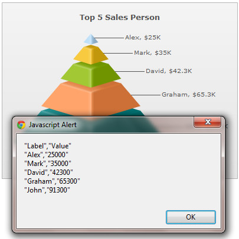
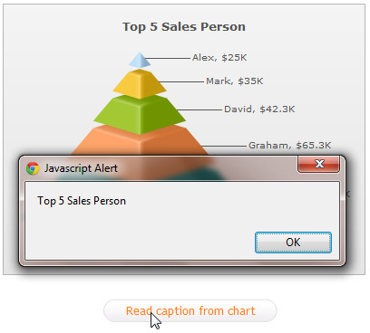

| Getting data back from chart |
|
FusionWidgets XT uses FusionCharts JavaScript Class that takes care of all the products of FusionCharts XT Suite including FusionWidgets XT. FusionCharts JavaScript Class allows you to get data back from chart. Using API functions you can retrieve the chart data, along with all attributes or properties, in XML or JSON format. You can also retrieve the chart data in CSV format. Moreover, you can read all chart attributes from a chart. By "chart attribute", we mean all the XML attributes or JSON properties which are passed through <chart> element in chart XML data or through chart property in chart's JSON data. In this page, we will learn how to:
Code examples discussed in this section are present in Download Package > Code > JavaScript > Basics folder. |
| Get XML data from chart |
|
You can get chart XML data using FusionCharts JavaScript Class API. FusionCharts provides various functions as listed below to achieve this:
Let's now see how these functions work in code: Get XML data from a chart using chart HTML Object var chartReference = FusionCharts("myChartId");
var chartXML = chartReference.getXMLData();
Click here to see a complete implementation code sample » <html>
<head>
<title>Update Chart data</title>
<script type="text/javascript" src="../../Charts/FusionCharts.js">
</script>
</head>
<body>
<div id="chartContainer">Chart will load here!</div>
<script type="text/javascript"><!--
var myChart = new FusionCharts("../../Charts/Pyramid.swf", "myChartId", "400", "300", "0", "1");
myChart.setXMLUrl("AugustData.xml");
myChart.render("chartContainer");
function showData(format)
{
var chartReference = FusionCharts( "myChartId" );
alert(chartReference.getXMLData());
}
// -->
</script>
<input type="button" onClick="showData('xml');" value="Show XML Data">
</body>
</html>
Other functions Get XML data from a chart using getXMLData() on FusionCharts JavaScript Object var chartReference = FusionCharts.items[ "myChartId" ]; var chartXML = chartReference.getXMLData(); See it live! Get XML from a chart using getChartData() function on FusionCharts JavaScript Object var chartReference = FusionCharts("myChartId");
var chartXML = chartReference.getChartData("xml");
See it live! Get XML from a chart using getXML() function on FusionCharts HTML Object var chartReference = FusionCharts("myChartId");
var chartXML = chartReference.getXML();
See it live! The function getXML() is deprecated. |
| Get JSON data from chart |
|
You can get chart JSON data using FusionCharts JavaScript Class API. FusionCharts provides various functions as listed below to achieve this:
Let's now see how these functions work in code: Get JSON data from a chart using getJSONData() function var chartReference = FusionCharts("myChartId");
var chartJSON = chartReference.getJSONData();
See it live! Get JSON data from a chart using getChartData() function var chartReference = FusionCharts("myChartId");
var chartXML = chartReference.getChartData("json");
See it live! |
| Get CSV Data from chart |
|
You can access data from the chart in CSV format. For this you need to call the API function - getDataAsCSV() » This legacy function can be called either on FusionCharts HTML Object or FusionCharts JavaScript Object. Let us see a small sample which gets CSV data from a Pyramid chart and displays it in a JavaScript alert box as shown in the image below:  <html>
<head>
<title>Getting CSV data from chart</title>
<script type="text/javascript" src="Charts/FusionCharts.js">
</script>
</head>
<body>
<div id="chartContainer">Chart will load here!</div>
<script type="text/javascript"><!--
var myChart = new FusionCharts( "Charts/Pyramid.swf", "myChartId", "400", "300", "0", "0" );
myChart.setXMLData("<chart caption='Top 5 Sales Person' numberPrefix='$' isSliced='1'><set label='Alex' value='25000' /><set label='Mark' value='35000' /><set label='David' value='42300' /><set label='Graham' value='65300' /><set label='John' value='91300' /></chart>");
myChart.render("chartContainer");
// -->
</script>
<input onclick = "alert(FusionCharts('myChartId').getDataAsCSV())" type="button" value="Get CSV Data from chart">
</body>
</html>
In the above code, we first create a Pyramid chart with DOM Id as myChartId. We provide the following data to the chart and ask it to render: <chart caption='Top 5 Sales Person' numberPrefix='$' isSliced='1'>
<set label='Alex' value='25000' />
<set label='Mark' value='35000' />
<set label='David' value='42300' />
<set label='Graham' value='65300' />
<set label='John' value='91300' />
</chart>
Thereafter, we're creating a button, which when clicked, exports CSV data from the chart and shows in an alert box. We get the FusionCharts JavaScript Object reference of the chart by FusionCharts('myChartId'). onclick = "alert(FusionCharts('myChartId').getDataAsCSV())"
See it live! Note that the CSV data provides only the data of the chart's dataplot devoid of all properties and trendline definitions. myChart.getDataAsCSV();
...
FusionCharts.getObjectReference("myChartId").getDataAsCSV();
...
FusionCharts.items["myChartId"].getDataAsCSV();
You can customize the output format of CSV data by setting various chart attributes in XML or JSON data. You can set the value separator, value qualifier and whether to show formatted data values. Read Exporting Chart Data > Using JavaScript API to know more on the attributes that configure CSV output format. |
| Read chart attributes from chart |
|
You can read a particular chart property (also known as "chart attribute" which is passed through the <chart> element in chart XML data or through chart property in chart's JSON data) from a chart using the getChartAttribute() function » This legacy function can be called either using FusionCharts HTML Object or FusionCharts JavaScript Object. Let's build a sample which reads the caption of a chart and displays it in a JavaScript alert box as shown in the image below:  <html>
<head>
<title>Getting CSV data from chart</title>
<script type="text/javascript" src="Charts/FusionCharts.js">
</script>
</head>
<body>
<div id="chartContainer">Chart will load here!</div>
<script type="text/javascript"><!--
var myChart = new FusionCharts( "Charts/Pyramid.swf", "myChartId", "400", "300", "0", "1" );
myChart.setXMLData("<chart caption='Top 5 Sales Person' numberPrefix='$' isSliced='1'><set label='Alex' value='25000' /><set label='Mark' value='35000' /><set label='David' value='42300' /><set label='Graham' value='65300' /><set label='John' value='91300' /></chart>");
myChart.render("chartContainer");
// -->
</script>
<input onclick = "alert(FusionCharts('myChartId').getChartAttribute('caption'))" type="button" value="Read caption from chart">
</body>
</html>
See it live! The above code does the following:
When the button is clicked, the getChartAttribute() function retrieves the value of caption attribute i.e., "Top 5 Sales Person" from the chart and displays in an alert box. We get the FusionCharts JavaScript Object reference of the chart by FusionCharts('myChartId'). To know more on the function getChartAttribute() please read API Reference> Functions page. |
| Retrieve data from real-time charts and gauges |
|
You can retrieve the data updated in a real-time chart or gauge using FusionCharts JavaScript Class. There are two available functions to achieve this - getData and getDataForId. The getData function works in all real-time charts and real-time gauges. Let us know discuss how this function works in various real-time charts and gauges. In real-time charts it provides the chart's current data in a JavaScript array. For more details on how this function works and to get a code sample using this function click here. Example usage: var chartReference = FusionCharts("myChartId");
//Get the current view state data of chart (in array)
var arrData = chartReference.getData();
In real-time gauges it provides the gauge's current value as a number. In Angular gauge and Horizontal Linear gauge, getData function requires the dial/pointer index to be passed as a parameter. Example usage in LED gauge (or Bulb, Cylinder and Thermometer ): var chartReference = FusionCharts("myChartId");
//Get the current view state data
var nData = chartReference.getData();
Example usage in Angular gauge (or Horizontal Linear gauge): var chartReference = FusionCharts("myChartId");
//Get the current view state data of the first dial
var nData1 = chartReference.getData(1);
//Get the current view state data of the second dial
var nData2 = chartReference.getData(2);
The getDataForId function retrieves data from Angular gauge and Horizontal Linear gauge. This function is applicable when dials of Angular gauge or pointer of Horizontal Linear gauge are defined with IDs. Example usage: var chartReference = FusionCharts("myChartId");
var data1 = chartReference.getDataForId("CPU1TEMP");
|